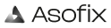

Branding
Uso sobre fondo claro
Versión Main (a color) y Monochrome (gris) del isologotipo e isotipo, para aplicar sobre fondos blancos o claros.
Logotype · Main
Isotype · Main

Logotype · Monochrome
Isotype · Monochrome
Uso sobre fondo oscuro
Misma lógica de variantes, pero pensadas para aplicar sobre fondos oscuros o de color.
Logotype · Main
Logotype · Monochrome
Isotype · Monochrome
Lineamientos
- Usar Logotype (isologotipo completo) cuando haya espacio suficiente para el nombre completo: headers, pantallas de login, documentos.
- Usar Isotype (solo el triángulo) en espacios reducidos: favicons, avatares de marca, ícono de app.
- Usar la versión Main (a color) por defecto, siempre que el fondo lo permita.
- Usar la versión Monochrome solo cuando el contexto no admite color (impresión a un color, marcas de agua, restricciones de la superficie).
- No recolorear, rotar, distorsionar ni separar los elementos del isologotipo.
Documentación en construcción. Próximamente: descripciones de uso, guías de accesibilidad y recomendaciones de implementación para esta sección.